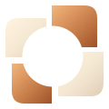
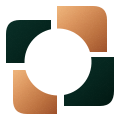

מסודרים 360° — לוגו לכל רקע
סמל, שם וסלוגן. רקע שקוף, קווי מתאר וקטוריים, גרדיאנטים ומרקם עדין.
הורדת כל הקבצים ב־ZIP ←



שחזור מהתמונה שסופקה, ולא קובץ המקור של המעצב. הפרטים הזעירים, הגרדיאנט והמרקם שוחזרו בקירוב. כל הקבצים עצמאיים וללא תמונה מוטמעת או פונט חיצוני.